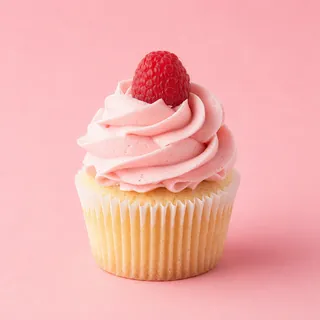

WhatsApp · al instante
Tu WhatsApp responde
y
vende solo.
El bot atiende cada mensaje al instante, 24/7. Tú solo recibes los pedidos.
Responde en segundos
Atiende día y noche
Cierra ventas sin que estés
9:41

Dulce Lina
en línea
Mensaje